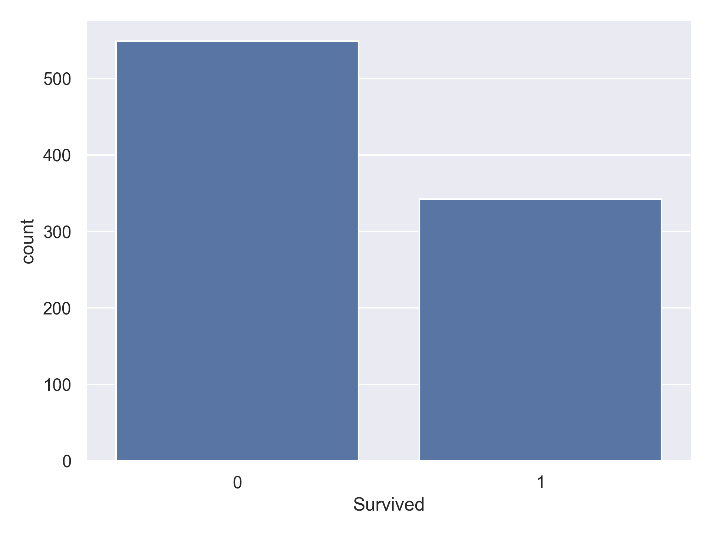
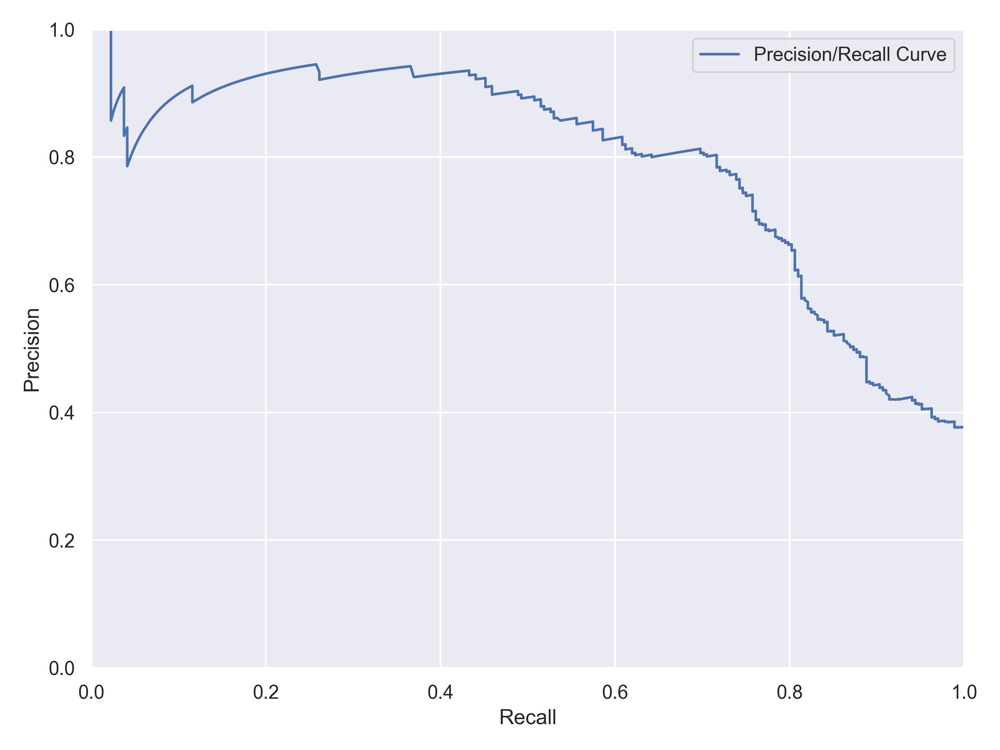

Who Survived the Titanic? A Data-Driven Look at Chance, Class, and Choice

Introduction
1 Key Results
Who survived the Titanic shipwreck — and why? Beneath this tragic event lies a fascinating data story of class, age, and gender.
Through Exploratory Data Analysis (EDA) and machine learning, I built models to predict passenger survival and uncover the hidden patterns behind the numbers. While the overall survival rate was only about 38%, survival wasn’t random — women, children, and first-class passengers had dramatically higher chances. This project became a hands-on introduction to classification modeling and key evaluation metrics like Precision, Recall, and F1-Score.


2. Why It Matters
Predicting survival in the Titanic disaster dataset isn’t just an academic challenge — it’s central to how we think about risk, fairness and decision-making in real-world scenarios. When we study what factors (such as gender, class, age) determined survival, these insights help policy makers, emergency planners and data scientists to better design protocols that save lives in future crises.
By applying Exploratory Data Analysis (EDA) and machine learning techniques to this classification problem, we learn not only how to build models that predict outcomes, but also why those outcomes occurred. That matters because in the fields of transportation safety, disaster response and social equity, it’s not enough to know who survived — we want to understand why. These learnings help organisations and analysts make informed decisions around resource allocation, training and evacuation strategies — ultimately leading to safer systems and more equitable responses.
3. The Data
The dataset from the Kaggle competition “Titanic – Machine Learning from Disaster” consists of a training set of 891 passenger records and a test set of 418 records. Each row describes a passenger on the RMS Titanic and includes features such as:
- Ticket class: 1st, 2nd, 3rd
- Sex (male or female)
- Age (in years)
- Number of siblings/spouses aboard
- Number of parents/children aboard
- Ticket fare paid
- Port of embarkation: Cherbourg/Queenstown/Southampton
The target variable is Survived (0 = died, 1 = survived) for each passenger in the training set.
Link to the public dataset: https://www.kaggle.com/competitions/titanic/data


Methods & Results
4. What I Did
The workflow followed a straightforward pattern: EDA → Feature Engineering → Model Training → Evaluation.
During feature engineering, I created meaningful variables such as AgeGroup (Child, Teen, Young Adult, Adult, Senior), cabin_present (indicating whether a cabin number was available), and RelativesOnboard (the sum of SibSp and Parch).
I trained several baseline models — SGD, SVM, Decision Tree, and Random Forest — and compared their performance using accuracy. The SVM model performed best, so I fine-tuned it with GridSearchCV to optimize hyperparameters.
Final performance was evaluated using Accuracy, Precision, Recall, and F1-Score to ensure balanced assessment across all prediction outcomes.
5. What I Found
Influence of Features on Survival Rates
Gender was the single strongest predictor of survival. Females had consistently higher survival probabilities (~0.59–0.94), while males saw a steep drop after childhood (~0.09–0.23).
Passenger Class clearly stratified outcomes — higher class meant better chances. The extremes: 1st-class females (~0.97 survival) vs 3rd-class males (~0.14).
Age mattered: children were prioritized during evacuation. Boys and girls under 12 had similar survival rates (~0.57–0.59), but after adolescence, the gender gap widened sharply.

Performance Metrics of the Best Model (SVM): - Accuracy 82% - Precision: 80% - Recall: 72% - F1-Score: 76%


Conclusion
6. What I Learned
This project taught me how to build and evaluate Classification Models end to end — from preprocessing raw data to fine-tuning hyperparameters. I deepened my understanding of key evaluation metrics such as Accuracy, Precision, Recall, F1-Score, and the Confusion Matrix, as well as diagnostic tools like the Precision-Recall and ROC Curves.
Through EDA and thoughtful feature engineering, I saw how data visualization and preprocessing pipelines can transform raw numbers into insights that explain why models make certain predictions — not just how well they perform.
Credits
Thanks for Reading the Post!
Inspired by Chapter 3 from Hands-On Machine Learning with Scikit-Learn, Keras, and TensorFlow, 3rd Edition by Aurélien Géron